library(tidyverse)14 Writing reports
14.1 Atomic weight of carbon
The atomic weight of the chemical element carbon is 12. Two methods of measuring the atomic weight of samples of carbon were compared. The results are shown in link. The methods are labelled 1 and 2. The first task is to find out whether the two methods have different “typical” measures (mean or median, as appropriate) of the atomic weight of carbon.
For this question, compose a report in a Quarto document. See part (a) for how to get this started.
Your report should read like an actual report, not just the answers to some questions that I set you. To help with that, write some text that links the parts of the report together smoothly, so that it reads as a coherent whole. The grader had 3 discretionary marks to award for the overall quality of your writing. The scale for this was:
3 points: excellent writing. The report flows smoothly, is easy to read, and contains everything it should (and nothing it shouldn’t).
2 points: satisfactory writing. Not the easiest to read, but says what it should, and it looks at least somewhat like a report rather than a string of answers to questions.
1 point: writing that is hard to read or to understand. If you get this (or 0), you should consider what you need to do to improve when you write your project.
0 points: you answered the questions, but you did almost nothing to make it read like a report.
Create a new Quarto document. To do this, in R Studio, select File, New File, Quarto Document. Type the report title and your name in the boxes, and leave the output on the default HTML. Click OK.
Write an introduction that explains the purpose of this study and the data collected in your own words.
Begin an appropriately-titled new section in your report, read the data into R and display the results.
Make an appropriate plot to compare the measurements obtained by the two methods. You might need to do something about the two methods being given as numbers even though they are really only identifiers. (If you do, your report ought to say what you did and why.)
Comment briefly on what you see in your plot.
Carry out the most appropriate \(t\)-test. (You might like to begin another new section in your report here.)
Do the most appropriate test you know that does not assume normally-distributed data.
Discuss the results of your tests and what they say about the two methods for measuring the atomic weight of carbon. If it seems appropriate, put the discussion into a section called Conclusions.
14.2 Sparrowhawks
(This is a report-writing question, but it also uses some regression techniques from later in the course.)
One of nature’s patterns is the relationship between the percentage of adult birds in a colony that return from the previous year, and the number of new adults that join the colony. Data for 13 colonies of sparrowhawks can be found at link. The columns are the percentage of adults returning from the previous year, and the number of new adults that join the colony.
Create a new Quarto document, give it a suitable title, and ask for HTML output. Answer the questions that follow in your report. At any stage, you can Render your document to see how the report looks so far.
Read in the data and display the first few values. Add some text saying how many rows of data there are.
Create a new section entitled “Exploratory analysis”, and create a scatterplot for predicting number of new adults from the percentage of returning adults. Describe what you see, adding some suitable text to your report.
Obtain the correlation between the two variables. Is this consistent with the scatterplot? Explain briefly. (The R function you need is
cor. You can feed it a data frame.)Obtain the regression line for predicting the number of new adults from the percentage of returning adults.
What are the intercept and slope of your regression line? Is the slope significant? What does that mean, in the context of the data?
Create a scatterplot of the data with the regression line on it.
For short-lived birds, the association between these two variables is positive: changes in weather and food supply cause the populations of new and returning birds to increase together. For long-lived territorial birds, however, the association is negative because returning birds claim their territories in the colony and do not leave room for new recruits. Which type of species is the sparrowhawk? Add a short Conclusions section to your report with discussion of this issue.
14.3 Learning to code
A programming course, Comp Sci 101, can be taken either in-person, by attending a class at fixed days and times, or online, by doing sessions that can be taken at times the student chooses. The course coordinator wants to know whether students taking the course in these two different ways learn a different amount, as measured by their scores on the final exam for the course. This example comes from the before-times, so the final exam was taken in person by all students. The final exam was out of 45 marks. A total of 18 students took part in the study. Each student was allowed to choose the section they preferred. The data are in http://ritsokiguess.site/datafiles/proggo.csv.
Write a report of a complete and appropriate analysis of these data. Your report should include a description of the data in your own words, any necessary pre-processing steps, appropriate graphs, statistical analysis, assessment of assumptions for your preferred analysis, and a statement of conclusions. Imagine that your report will be read by the department Chair, who does not know about this study, and who still remembers some of their first-year Statistics course.
(My example report is in a later chapter, the one called Learning to Code.)
14.4 Treating dandruff
According to the Mayo Clinic, dandruff is “a common condition that causes the skin on the scalp to flake. It isn’t contagious or serious. But it can be embarrassing and difficult to treat.” Shampoos often claim to be effective in treating dandruff. In a study, four shampoos were compared:
PyrI: 1% pyrithione zinc shampooPyrII: the same asPyrIbut with instructions to shampoo two times at each wash. The labels for these arePyrwith a Roman numeral I or II attached.Keto: 2% ketoconazole shampooPlacebo: a placebo shampoo
Each subject was randomly assigned to a shampoo. After six weeks of treatment, eight sections of the scalp were examined for each subject. Each section of the scalp was given a score that measured the amount of flaking on a scale of 0-10, less flaking being better. The response variable, called Flaking, was the sum of these eight scores, and is a whole number for each subject.
The data are in http://ritsokiguess.site/datafiles/dandruff.txt, with the data values separated by tabs.
Your task is to write a report on your analysis of this data set, and to make a recommendation for the best shampoo(s) out of the four studied here. The target audience for your report is the principal investigator of the study described above, who knows a lot about shampoo, but not so much about statistics. (They took a course some time ago that covered the material you’ve seen in this course so far, at about the level of STAB22 or STA 220.) Some things you might want to consider, in no particular order (you need to think about where and if to include these things):
- an Introduction, written in your own words as much as possible
- a Conclusion that summarizes what you found
- a suitable and complete piece of statistical inference
- a numerical summary of the data
- graph(s) of the data
- an assessment of the assumptions of your analysis
- citation of external sources
- anything else that you can make the case for including
In a Quarto document, you can use ## to make a heading (you can experiment with more or fewer # symbols), or in Visual mode, you can type a slash on a new line and select (probably) Heading 2 from the dropdown.
Your aim is to produce a report, suitable for the intended audience, with all the important elements and no irrelevant ones, that is well-written and easy to follow. There is credit for good writing. For this report, you should include your code in with your report. (In a real report, you would probably show the output and not the code, but we are interested in your code here as well.)
(My example report is in a later chapter.)
My solutions follow. The example reports on coding and treating dandruff are separate chapters.
14.5 Atomic weight of carbon
The atomic weight of the chemical element carbon is 12. Two methods of measuring the atomic weight of samples of carbon were compared. The results are shown in link. The methods are labelled 1 and 2. The first task is to find out whether the two methods have different “typical” measures (mean or median, as appropriate) of the atomic weight of carbon.
For this question, compose a report in a Quarto document. ( See part (a) for how to get this started.
Your report should read like an actual report, not just the answers to some questions that I set you. To help with that, write some text that links the parts of the report together smoothly, so that it reads as a coherent whole. The grader had 3 discretionary marks to award for the overall quality of your writing. The scale for this was:
3 points: excellent writing. The report flows smoothly, is easy to read, and contains everything it should (and nothing it shouldn’t).
2 points: satisfactory writing. Not the easiest to read, but says what it should, and it looks at least somewhat like a report rather than a string of answers to questions.
1 point: writing that is hard to read or to understand. If you get this (or 0), you should consider what you need to do to improve when you write your project.
0 points: you answered the questions, but you did almost nothing to make it read like a report.
- Create a new Quarto document. To do this, in R Studio, select File, New File, Quarto Document. Type the report title and your name in the boxes, and leave the output on the default HTML. Click OK.
Solution
You’ll see the title and your name in a section at the top of the document, and below that you’ll see a template document.
\(\blacksquare\)
- Write an introduction that explains the purpose of this study and the data collected in your own words.
Solution
Something like this:
This study is intended to compare two different methods (labelled 1 and 2) for measuring the atomic weight of carbon (which is known in actual fact to be 12). Fifteen samples of carbon were used; ten of these were assessed using method 1 and the remaining five using method 2. The primary interest in this particular study is to see whether there is a difference in the mean or median atomic weight as measured by the two methods.
Before that, start a new section like this: ## Introduction. Also, get used to expressing your understanding in your words, not mine. Using my words, in my courses, is likely to be worth very little.
\(\blacksquare\)
- Begin an appropriately-titled new section in your report, read the data into R and display the results.
Solution
Values separated by spaces:
my_url <- "http://ritsokiguess.site/datafiles/carbon.txt"
carbon <- read_delim(my_url, " ")Rows: 15 Columns: 2
── Column specification ────────────────────────────────────────────────────────
Delimiter: " "
dbl (2): method, weight
ℹ Use `spec()` to retrieve the full column specification for this data.
ℹ Specify the column types or set `show_col_types = FALSE` to quiet this message.carbonI would expect you to include, without being told to include it, some text in your report indicating that you have sensible data: two methods labelled 1 and 2 as promised, and a bunch1 of atomic weights close to the nominal figure of 12.
\(\blacksquare\)
- Make an appropriate plot to compare the measurements obtained by the two methods. You might need to do something about the two methods being given as numbers even though they are really only identifiers. (If you do, your report ought to say what you did and why.)
Solution
The appropriate plot, with a categorical method and quantitative weight, is something like a boxplot. If you’re not careful, method will get treated as a quantitative variable, which you don’t want; the easiest way around that, for a boxplot at least, is to turn it into a factor like this:
ggplot(carbon, aes(x = factor(method), y = weight)) + geom_boxplot()
If you insist, you could do a faceted histogram (above and below, for preference):
ggplot(carbon, aes(x = weight)) + geom_histogram(bins = 5) +
facet_wrap(~method, ncol = 1)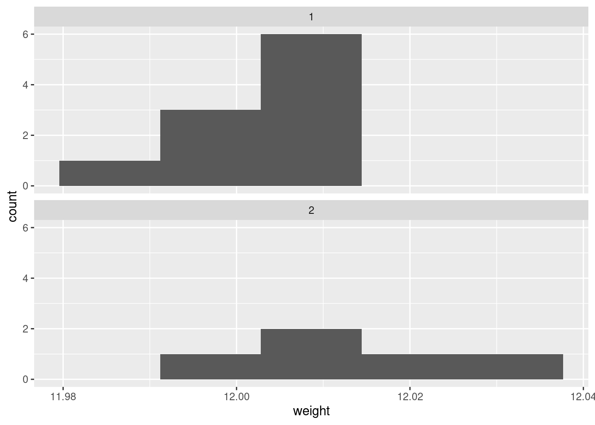
There are really not enough data values for a histogram to be of much help, so I don’t like this as much.
If you are thinking ahead (we are going to be doing a \(t\)-test), then you’ll realize that normality is the kind of thing we’re looking for, in which case normal quantile plots would be the thing. However, we might have to be rather forgiving for method 2 since there are only 5 observations:
ggplot(carbon, aes(sample = weight)) +
stat_qq() + stat_qq_line() +
facet_wrap(~method)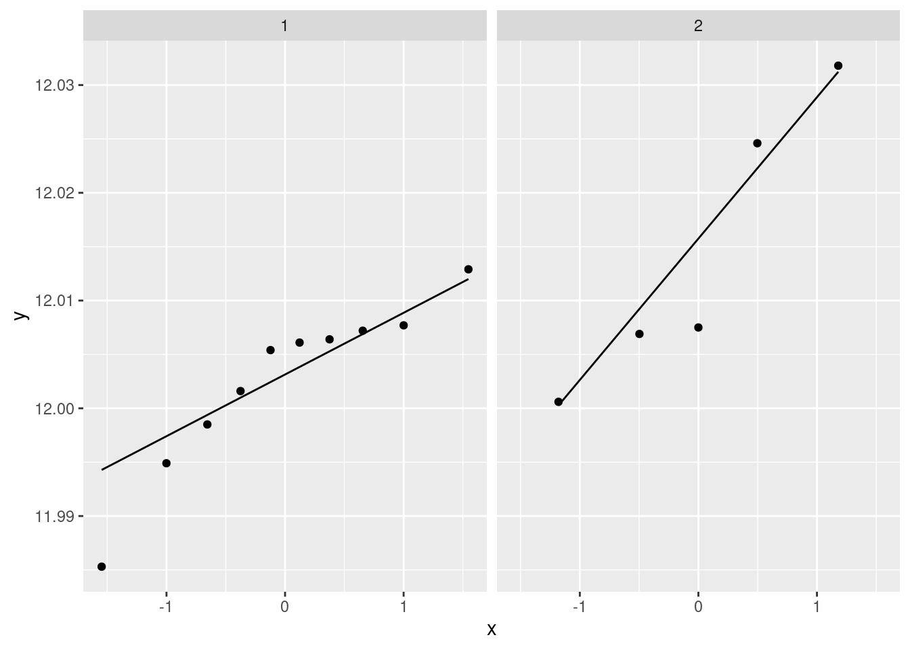
I don’t mind these coming out side by side, though I would rather have them squarer.
I would say, boxplots are the best, normal quantile plots are also acceptable, but expect to lose something for histograms because they offer only a rather crude comparison in this case.
\(\blacksquare\)
- Comment briefly on what you see in your plot.
Solution
In boxplots, if that’s what you drew, there are several things that deserve comment: the medians, the spreads and the shapes. The median for method 1 is a little bit lower than for method 2 (the means are probably more different, given the shapes of the boxes). The spread for method 2 is a lot bigger. (Looking forward, that suggests a Welch-Satterthwaite rather than a pooled test.) As for shape, the method 2 measurements seem more or less symmetric (the whiskers are equal anyway, even if the position of the median in the box isn’t), but the method 1 measurements have a low outlier. The histograms are hard to compare. Try to say something about centre and spread and shape. I think the method 2 histogram has a slightly higher centre and definitely bigger spread. On my histogram for method 1, the distribution looks skewed left. If you did normal quantile plots, say something sensible about normality for each of the two methods. For method 1, I would say the low value is an outlier and the rest of the values look pretty straight. Up to you whether you think there is a curve on the plot (which would indicate skewness, but then that highest value is too high: it would be bunched up with the other values below 12.01 if there were really skewness). For method 2, it’s really hard to say anything since there are only five values. Given where the line goes, there isn’t much you can say to doubt normality. Perhaps the best you can say here is that in a sample of size 5, it’s difficult to assess normality at all.
\(\blacksquare\)
- Carry out the most appropriate \(t\)-test. (You might like to begin another new section in your report here.)
Solution
This would be the Welch-Satterthwaite version of the two-sample \(t\)-test, since the two groups do appear to have different spreads:
t.test(weight ~ method, data = carbon)
Welch Two Sample t-test
data: weight by method
t = -1.817, df = 5.4808, p-value = 0.1238
alternative hypothesis: true difference in means between group 1 and group 2 is not equal to 0
95 percent confidence interval:
-0.027777288 0.004417288
sample estimates:
mean in group 1 mean in group 2
12.00260 12.01428 Imagining that this is a report that would go to your boss, you ought to defend your choice of the Welch-Satterthwaite test (as I did above), and not just do the default \(t\)-test without comment.
If, in your discussion above, you thought the spreads were equal enough, then you should do the pooled \(t\)-test here, which goes like this:
t.test(weight ~ method, data = carbon, var.equal = T)
Two Sample t-test
data: weight by method
t = -2.1616, df = 13, p-value = 0.04989
alternative hypothesis: true difference in means between group 1 and group 2 is not equal to 0
95 percent confidence interval:
-2.335341e-02 -6.588810e-06
sample estimates:
mean in group 1 mean in group 2
12.00260 12.01428 The point here is that you should do the right test based on your conclusion. Being consistent is the most important thing. (In this case, note that the P-values are very different. We’ll get to that shortly.)
You might think we should do a test that compares the two variances, so that then we’d know which flavour of test to do. Such tests exist, but I feel that it’s just as good to eyeball the spreads and make a call about whether they are “reasonably close”. Or even, to always do the Welch-Satterthwaite test on the basis that it is pretty good even if the two populations have the same variance. (If this last point of view is one that you share, you ought to say something about that when you do your \(t\)-test.) The problem is that doing a test to decide which test to do can change the actual P-value from what the output of your second test says; the second test, as far as R is concerned, is done without knowledge that you did another test first.
Extra: I guess this is a good place to say something about tests for comparing variances, given that you might be pondering that. There are several that I can think of, that R can do, of which I mention two.
The first is the \(F\)-test for variances that you might have learned in B57 (that is the basis for the ANOVA \(F\)-test):
var.test(weight ~ method, data = carbon)
F test to compare two variances
data: weight by method
F = 0.35768, num df = 9, denom df = 4, p-value = 0.1845
alternative hypothesis: true ratio of variances is not equal to 1
95 percent confidence interval:
0.04016811 1.68758230
sample estimates:
ratio of variances
0.3576842 This, unfortunately, is rather dependent on the data in the two groups being approximately normal. Since we are talking variances rather than means, there is no Central Limit Theorem to rescue us for large samples (quite aside from the fact that these samples are not large). Since the ANOVA \(F\)-test is based on the same theory, this is why normality is also more important in ANOVA than it is in a \(t\)-test.
The second is Levene’s test. This doesn’t depend on normality (at least, not nearly so much), so I like it better in general:
library(car)
leveneTest(weight ~ factor(method), data = carbon)Levene’s test takes a different approach: first the absolute differences from the group medians are calculated, and then an ANOVA is run on the absolute differences. If, say, one of the groups has a larger spread than the other(s), its absolute differences from the median will tend to be bigger.2 As for what we conclude here, well, neither of the variance tests show any significance at all, so from that point of view there is no evidence against using the pooled \(t\)-test. Having said that, the samples are small, and so it would be difficult to prove that the two methods have different variance, even if they actually did.3
Things are never as clear-cut as you would like. In the end, it all comes down to making a call and defending it.
\(\blacksquare\)
- Do the most appropriate test you know that does not assume normally-distributed data.
Solution
That would be Mood’s median test. Since I didn’t say anything about building it yourself, feel free to use smmr:
library(smmr)
median_test(carbon, weight, method)$grand_median
[1] 12.0064
$table
above
group above below
1 3 6
2 4 1
$test
what value
1 statistic 2.80000000
2 df 1.00000000
3 P-value 0.09426431As an aside, if you have run into a non-parametric test such as Mann-Whitney or Kruskal-Wallis that applies in this situation, be careful about using it here, because they have additional assumptions that you may not want to trust. Mann-Whitney started life as a test for “equal distributions”.4 This means that the null is equal location and equal spread, and if you reject the null, one of those has failed. But here, we suspect that equal spread will fail, so that the Mann-Whitney test may end up rejecting whether or not the medians are different, so it won’t answer the question you want an answer to. Mood’s median test doesn’t have that problem; all it’s saying if the null is true is that the medians are equal; the spreads could be anything at all.
The same kind of issues apply to the signed-rank test vs. the sign test. In the case of the signed-rank test, the extra assumption is of a symmetric distribution — to my mind, if you don’t believe normality, you probably don’t have much confidence in symmetry either. That’s why I like the sign test and Mood’s median test: in the situation where you don’t want to be dealing with assumptions, these tests don’t make you worry about that.
Another comment that you don’t need to make is based on the not-quite-significance of the Mood test. The P-value is less than 0.10 but not less than 0.05, so it doesn’t quite reach significance by the usual standard. But if you look up at the table, the frequencies seem rather unbalanced: 6 out of the remaining 9 weights in group 1 are below the overall median, but 4 out of 5 weights in group 2 are above. This seems as if it ought to be significant, but bear in mind that the sample sizes are small, and thus Mood’s median test needs very unbalanced frequencies, which we don’t quite have here.
\(\blacksquare\)
- Discuss the results of your tests and what they say about the two methods for measuring the atomic weight of carbon. If it seems appropriate, put the discussion into a section called Conclusions.
Solution
Begin by pulling out the P-values for your preferred test(s) and say what they mean. The P-value for the Welch-Satterthwaite \(t\)-test is 0.1238, which indicates no difference in mean atomic weights between the two methods. The Mood median test gives a similarly non-significant 0.0943, indicating no difference in the median weights. If you think both tests are plausible, then give both P-values and do a compare-and-contrast with them; if you think that one of the tests is clearly preferable, then say so (and why) and focus on that test’s results.
If you thought the pooled test was the right one, then you’ll have a bit more discussion to do, since its P-value is 0.0499, and at \(\alpha=0.05\) this test disagrees with the others. If you are comparing this test with the Mood test, you ought to make some kind of reasoned recommendation about which test to believe.
As ever, be consistent in your reasoning.
Extra: this dataset, where I found it, was actually being used to illustrate a case where the pooled and the Welch-Satterthwaite tests disagreed. The authors of the original paper that used this dataset (a 1987 paper by Best and Rayner;5 the data come from 1924!) point out that the pooled \(t\)-test can be especially misleading when the smaller sample is also the one with the larger variance. This is what happened here.
In the Best and Rayner paper, the Mood (or the Mann-Whitney) test was not being considered, but I think it’s good practice to draw a picture and make a call about which test is appropriate.
\(\blacksquare\)
14.6 Sparrowhawks
(This is a report-writing question, but it also uses some regression techniques from later in the course.)
One of nature’s patterns is the relationship between the percentage of adult birds in a colony that return from the previous year, and the number of new adults that join the colony. Data for 13 colonies of sparrowhawks can be found at link. The columns are the percentage of adults returning from the previous year, and the number of new adults that join the colony.
- Create a new Quarto document, give it a suitable title, and ask for HTML output. Answer the questions that follow in your report. At any stage, you can Render the document to see how the report looks so far.
Solution
In R Studio, select File, New File, Quarto Document. Fill in the Title, Author and leave the Default Output Format at HTML. You’ll see a template report with the document info at the top. This is my document info:
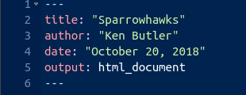
This is known in the jargon as a “YAML block”.6
\(\blacksquare\)
- Read in the data and display the first few values. Add some text saying how many rows of data there are.
Solution
Read the data into a data frame. In your report, add some text like “we read in the data”, perhaps after a section heading like “The data”. Then add a code chunk by typing a / and then Enter (if you are in the Visual editor):
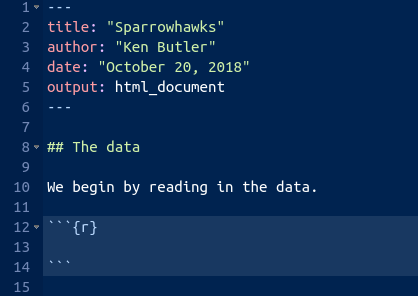
In this case, the code chunk contains the following code, minus the message that comes out of read_delim:
library(tidyverse)
my_url <- "http://ritsokiguess.site/datafiles/sparrowhawk.txt"
sparrowhawks <- read_delim(my_url, " ")Rows: 13 Columns: 2
── Column specification ────────────────────────────────────────────────────────
Delimiter: " "
dbl (2): returning, newadults
ℹ Use `spec()` to retrieve the full column specification for this data.
ℹ Specify the column types or set `show_col_types = FALSE` to quiet this message.sparrowhawksFor you, it looks like this:
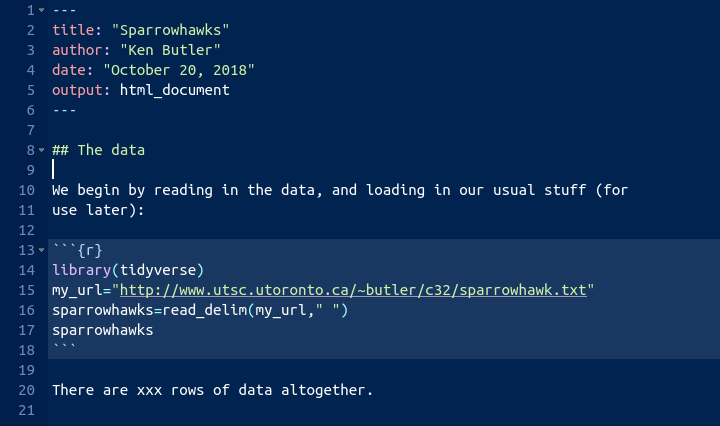
We don’t know how many rows of data there are yet, so I’ve left a “placeholder” for it, when we figure it out. The file is annoyingly called sparrowhawk.txt, singular. Sorry about that.
If you render this (click on “Render” at the top next to the arrow, or press control-shift-K), it should run, and you’ll see a viewer pop up with the HTML output. Now you can see how many rows there are, and you can go back and edit the R Markdown and put in 13 in place of the x’s, and Render again.
You might be worried about how hard R is working with all this rendering. Don’t worry about that. R can take it.
Mine looked like this:
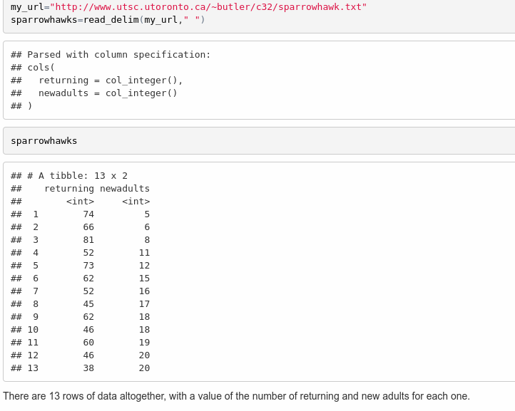
There is a better way of adding values that come from the output, which I mention here in case you are interested (if you are not, feel free to skip this). What you do is to make what is called an “inline code chunk”. Where you want a number to appear in the text, you have some code that looks like this:
The piece inside the backticks is the letter r, a space, and then one line of R code. The one line of code will be run, and all of the stuff within the backticks will be replaced in the output by the result of running the R code, in this case the number 13. Typically, you are extracting a number from the data, like the number of rows or a mean of something. If it’s a decimal number, it will come out with a lot of decimal places unless you explicitly round it. OK, let me try it: the data frame has 13 rows altogether. I didn’t type that number; it was calculated from the data frame. Woo hoo!
\(\blacksquare\)
- Create a new section entitled “Exploratory analysis”, and create a scatterplot for predicting number of new adults from the percentage of returning adults. Describe what you see, adding some suitable text to your report.
Solution
The R code you add should look like this, with the results shown (when you render the report again):
library(tidyverse)
ggplot(sparrowhawks, aes(x = returning, y = newadults)) +
geom_point() + geom_smooth()`geom_smooth()` using method = 'loess' and formula = 'y ~ x'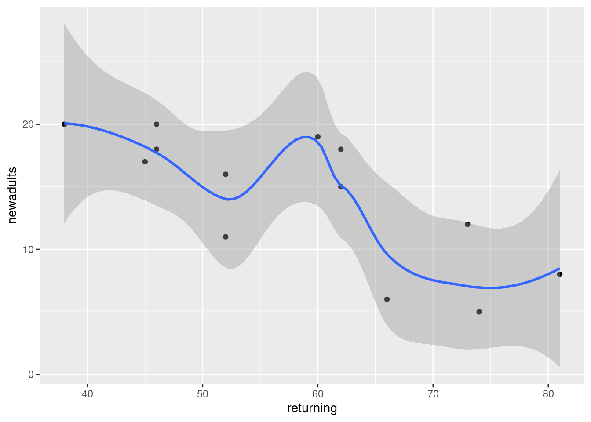
The piece of report that I added looks like this:
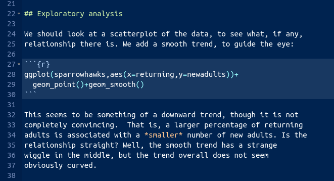
Note (i) that you have to do nothing special to get the plot to appear, and (ii) that I put “smaller” in italics, and you see how.
\(\blacksquare\)
- Obtain the correlation between the two variables. Is this consistent with the scatterplot? Explain briefly. (The R function you need is
cor. You can feed it a data frame.)
Solution
The appropriate R code is this, in another code chunk:
with(sparrowhawks, cor(newadults, returning))[1] -0.7484673Or you can ask for the correlations of the whole data frame:
cor(sparrowhawks) returning newadults
returning 1.0000000 -0.7484673
newadults -0.7484673 1.0000000This latter is a “correlation matrix” with a correlation between each column and each other column. Obviously the correlation between a column and itself is 1, and that is not the one we want.
I added this to the report (still in the Exploratory Analysis section, since it seems to belong there):
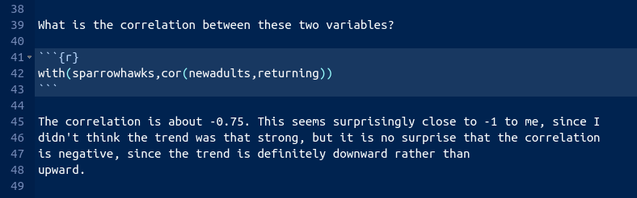
\(\blacksquare\)
- Obtain the regression line for predicting the number of new adults from the percentage of returning adults.
Solution
This R code, in another code chunk:
newadults.1 <- lm(newadults ~ returning, data = sparrowhawks)
summary(newadults.1)
Call:
lm(formula = newadults ~ returning, data = sparrowhawks)
Residuals:
Min 1Q Median 3Q Max
-5.8687 -1.2532 0.0508 2.0508 5.3071
Coefficients:
Estimate Std. Error t value Pr(>|t|)
(Intercept) 31.93426 4.83762 6.601 3.86e-05 ***
returning -0.30402 0.08122 -3.743 0.00325 **
---
Signif. codes: 0 '***' 0.001 '**' 0.01 '*' 0.05 '.' 0.1 ' ' 1
Residual standard error: 3.667 on 11 degrees of freedom
Multiple R-squared: 0.5602, Adjusted R-squared: 0.5202
F-statistic: 14.01 on 1 and 11 DF, p-value: 0.003248\(\blacksquare\)
- What are the intercept and slope of your regression line? Is the slope significant? What does that mean, in the context of the data?
Solution
See the output in the previous part. That’s what we need to talk about. I added this to the report. I thought we deserved a new section here:
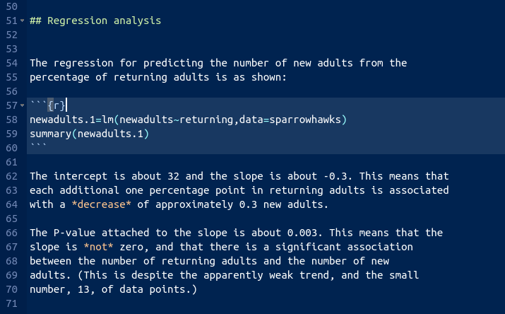
\(\blacksquare\)
- Create a scatterplot of the data with the regression line on it.
Solution
This code. Using geom_smooth with method="lm" will add the regression line to the plot:
ggplot(sparrowhawks, aes(x = returning, y = newadults)) +
geom_point() + geom_smooth(method = "lm")`geom_smooth()` using formula = 'y ~ x'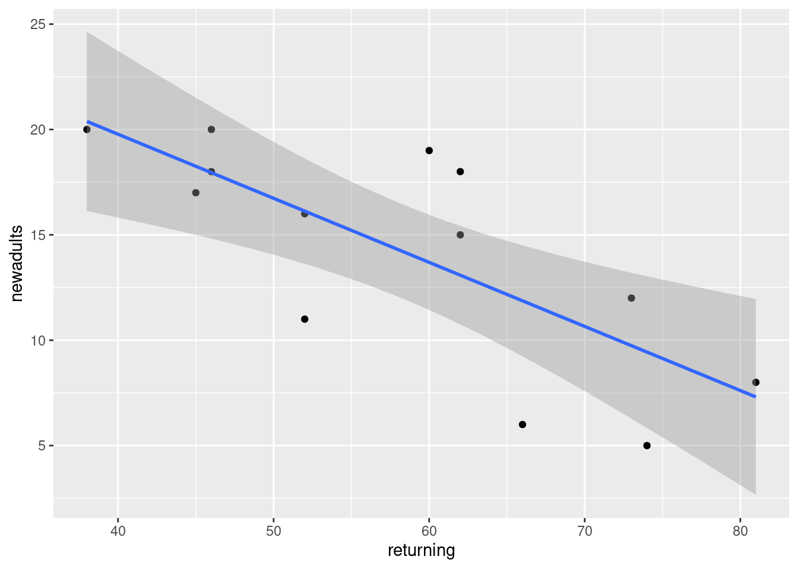
I added a bit of text to the report, which I will show in a moment.
\(\blacksquare\)
- For short-lived birds, the association between these two variables is positive: changes in weather and food supply cause the populations of new and returning birds to increase together. For long-lived territorial birds, however, the association is negative because returning birds claim their territories in the colony and do not leave room for new recruits. Which type of species is the sparrowhawk? Add a short Conclusions section to your report with discussion of this issue.
Solution
My addition to the report looks like this:
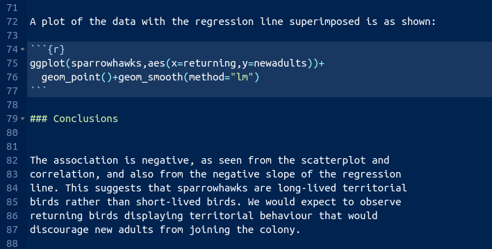
I think that rounds off the report nicely.
\(\blacksquare\)
It’s probably better in a report to use language a bit more formal than a bunch. Something like a number would be better.↩︎
The use of absolute differences, and the median, downplays the influence of outliers. The assumption here is that the absolute differences from the medians are approximately normal, which seems a less big assumption than assuming the actual data are approximately normal.↩︎
This is coming back to the power of something like Levene’s test; the power of any test is not going to be very big if the sample sizes are small.↩︎
The test goes back to the 1940s.↩︎
Best, D. J., and J. C. W. Rayner. “Welch’s Approximate Solution for the Behrens–Fisher Problem.” Technometrics 29, no. 2 (May 1, 1987): 205–10. doi:10.1080/00401706.1987.10488211. The data set is near the end.↩︎
YAML stands for Yet Another Markup Language, but we’re only using it in this course as the top bit of an R Markdown document.↩︎